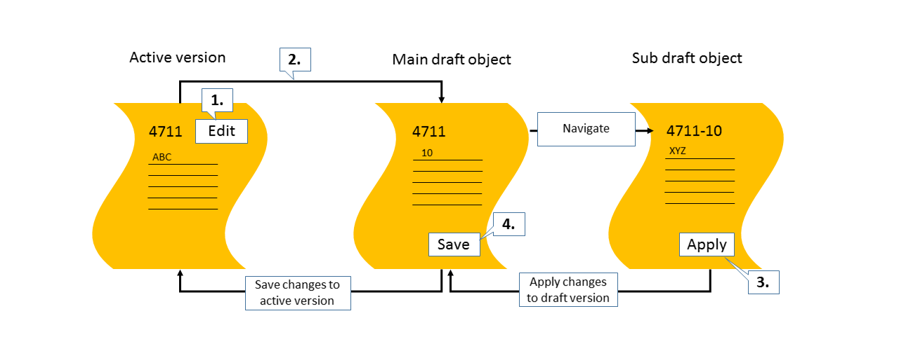

Draft Handling
A draft is an interim version of a business entity that has not yet been explicitly saved as an active version. Drafts are saved automatically in the background whenever users add or change information within a business entity while in edit state (auto-save). SAP Fiori elements support the creation of apps using draft handling.
Drafts are used as follows:
-
To keep unsaved changes if an editing activity is interrupted, allowing users to resume editing later.
- To prevent data loss if an app terminates unexpectedly
-
As a locking mechanism to prevent multiple users from editing the same object concurrently, and to make users aware when there are unsaved changes by another user.
When a user starts creating a new business entity or edits an existing one, a draft is created in parallel in the background to enable field validation and dynamic field control (showing additional fields based on user interaction), and to provide default values for fields based on recent data entry. A draft can be validated for consistency and completeness at any time. This returns a list of messages.
While the user is modifying a business entity, a saving indicator shows when a draft is saved implicitly. The user still needs to choose the Save button to incorporate the changes into an active business document.
The footer bar of a subobject page contains an Apply button in create mode and edit mode. By choosing this button, users can conclude their current create or edit activity, apply the changes or entries to the draft, and navigate one step up in the object hierarchy.
When a user edits an object, the system behavior of the Apply button is as follows: 
-
On an object page, the user chooses Edit.
-
The system creates a draft version of the object.
-
The user makes changes to the draft version of the object and navigates to a detail page. When choosing Apply, the changes are applied to the draft.
-
When the user chooses Save, the changes are saved to the active version of the object.
If the system encounters an error, for example, network issues, after having chosen Apply, a message is displayed. If the user chooses Cancel, nothing happens. If the user chooses Discard Changes, the system behaves according to the message, for example, the changes are discarded.
For more information on SAP Fiori draft handling, see https://experience.sap.com/fiori-design-web/draft-handling/ .
.